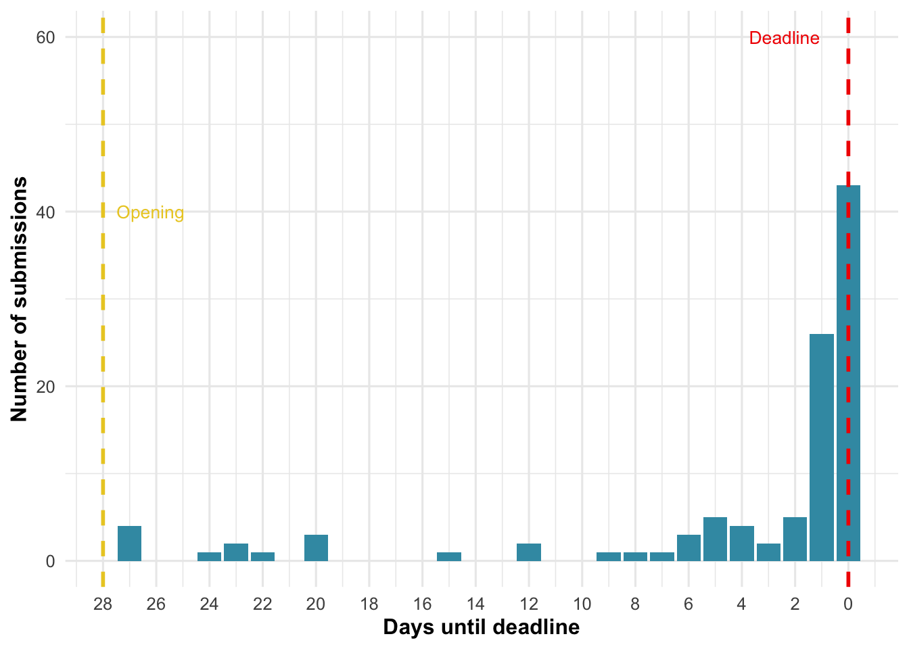

| position | n_submissions |
|---|---|
| Postdoc | 36 |
| Graduate Student/PhD Student | 35 |
| Principle investigator/Professor | 27 |
| Research Assistant | 2 |
| Researcher | 2 |
| lecturer | 2 |
| Adjunct Research Fellow | 1 |
| Associate Professor | 1 |
| Guest Researcher (postdoc) | 1 |
🌍🔬 Thank you all for submitting your fantastic intervention proposals to our Strengthening Trust in Climate Scientists Megastudy!
💪 You’ve exceeded even our most optimistic expectations — we received 107 intervention proposals from 81 different research teams1 (26 teams submitted two interventions), from 66 different institutions.
💚 We’re especially proud that so many submissions came from early-career researchers who want to strengthen trust in science.
🕵 Our advisory board will now begin reviewing all interventions. The process is fully anonymized — only the research lead (Jan) can link submissions to their authors, and cannot participate in the voting.
For full transparency, once the review process is complete, we’ll share all advisory board ratings and comments publicly (anonymizing both authors and reviewers).️
🗓 We expect the review and selection process to be completed by mid-December. Stay tuned for updates!️
To end with a little fun fact: Since we received a couple of apologies for late submissions — don’t feel bad, you’re not alone, it really happens to (almost) all of us (Figure 1) 😅:

Once again, a huge thank you to everyone who contributed to this collaborative effort. Your expertise, creativity, and collaborative spirit make this project possible. 💫
🔗 More information
For more information about the project and the team, visit our website.
💌 Questions? Email us anytime at
trustclimsci.megastudy@gmail.com
Footnotes
some “teams” are actually individual researchers—25 of the 107 submissions are single-authored↩︎